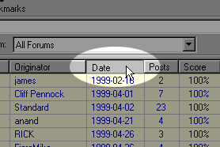

2.5 Changing Thread Order
By default, the Threads View Window displays the found threads in order of
significance (threads with the highest scores first). You can change this sort
order by clicking on one of the Column Headers:

Clicking the same column header again will reverse the sort order.